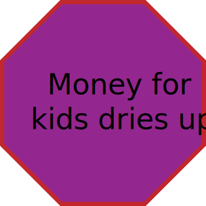

Please select one of the following options on the circles. You will have the option to read different scenarios and take different paths about a child entering the welfare system.
Call is made to central Child Welfare hotline and screened by Child Protection Services (CPS) intake team.
Call is screened OUT
In California, Child Welfare Services (CWS) uses risk assessment tools, like Structured Decision Making (SDM), to evaluate the likelihood of abuse or neglect. A screened out call indicates a low likelihood of abuse or neglect.
No investigation initiated and no further involvement by CWS for this particular call
This path has reached a conclusion. The child may interact again with child welfare, but at this stage they are unlikely to continue with the government and remain with their guardians.
Please select a different route by backtracking to the previous circle.
Call is screened IN
In California, Child Welfare Services (CWS) uses risk assessment tools, like Structured Decision Making (SDM), to evaluate the likelihood of abuse or neglect. A screened in call indicates a moderate or high likelihood of abuse or neglect.
Report is sent to the local county child welfare agency and screened into their system. A case is opened and the agency must initiate an investigation within 24 hours (this timeframe varies by state).
Screenings for neglect are subjective and depends on the case worker how they interpret the definition. Some examples of reported neglect are: not having a car seat for baby at time of birth, school truancy, ...
CPS investigates a case:
Insufficient evidence of abuse or neglect
Family may be offered state or county services to address economic or health needs that may be an underlying issue.
(No guarantee services or funds may be available)
Risk is minimized and the report case is closed.
Risk assessment of claims is conducted:
Low to no risk of future harm to the child is found.
Family may be offered state or county services to address economic or health needs that may be an underlying issue.
(No guarantee services or funds may be available)
Risk is minimized and the report case is closed.
Sufficient evidence of abuse or neglect substantiated.
Child harmed and at risk for future maltreatment. CPS files for court petition to remove child from family home
CPS files in court for state custody and removal of child from home:
Judge rules for custody to remain with parent(s)
Child remains in parental custody while completing required steps to ensure “safer” environment for child. Examples of this could be finding better or adequate housing, completing outpatient substance treatment, or leaving an unstable or violent partner.
A child has been removed from their home.
The child is placed in the care of a next of kin or relative.
Court grants temporary custody of the child to go to a relative/kin. The kin caregiver must adhere to and pass strict process to become a licensed foster parent first in order to be approved for custody
Explore other scenarios by returning to the previous decision point.
The child is placed in a foster family agency or group home.
Child is placed with one of the hundreds of private Foster Family Agencies (FFAs) within California.
California contracts with private Foster Family Agencies and foster group homes for the placement of children who require more intensive care.
*Stat here on abuse rates in foster youth group homes
Explore other scenarios by returning to the previous decision point.
Child is placed in a licensed foster family home.
Court grants temporary custody of the child to a licensed foster family unknown to the child. Child remains with the foster family until CPS determines when it is safe for the child to return to the birth parent(s).
According to Youth and Family Programs, In California, foster families can receive a stipend of $1,000 to $2,600 per child, per month to help with the added financial burden of caring for a child.
Kin placement does not receive a stipend to help with the added financial burden.
*Stat here on abuse rates in foster homes
CPS and courts determine when/if a child can return to birth parent(s)
The child returns to their birth parent(s) if the court and CPS deems it appropriate.
After a parent has completed an extensive program of requirements (for example: supervised visits, regular drug testing, behavioural programs, improved housing conditions, etc) a family court judge, with the guidance of CPS, determines it is safe for the child to reunite with the parent.
Parental rights for the child have been terminated.
Even if a parent has completed the extensive program of requirements, CPS can still push for termination of parental rights in family court. If a judge rules for terminating parental rights, that parent’s name is permanently removed from the child’s birth certificate.
Parents rights have been terminated.
The child is permanently placed in the car of the relative or next of kin.
Child’s kin guardian can proceed with the adoption process to gain permanent custody of the child.
The child remains in the system of a foster agency or group home.
Custody of the child remains with the agency indefinitely.
Foster family can proceed with the adoption process to gain permanent custody of the child.
Where does this leave us now?
text
text
text